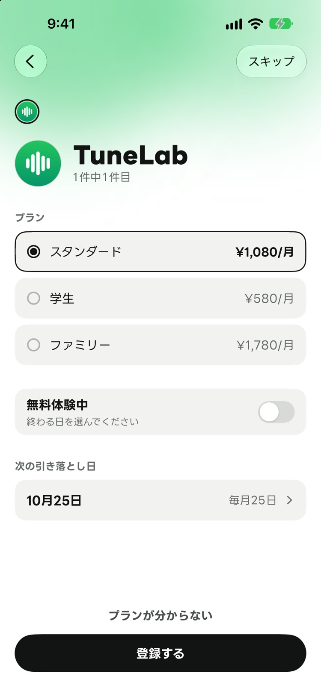
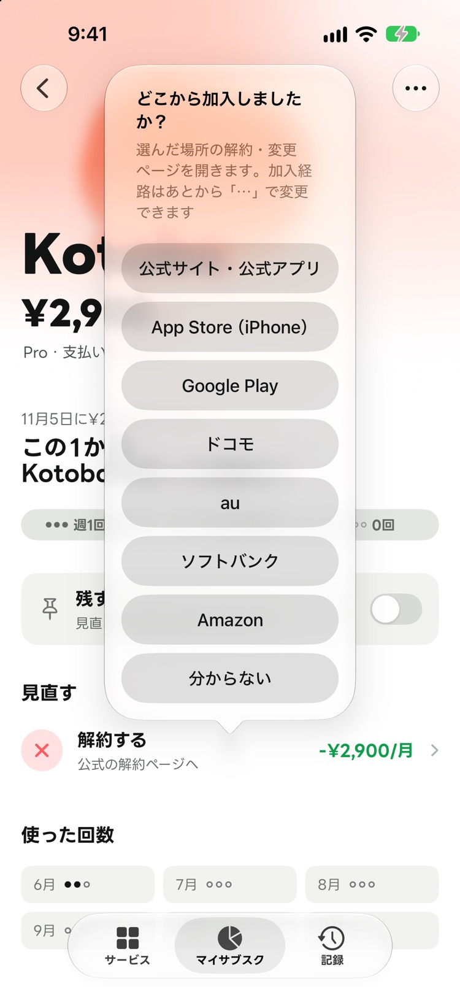
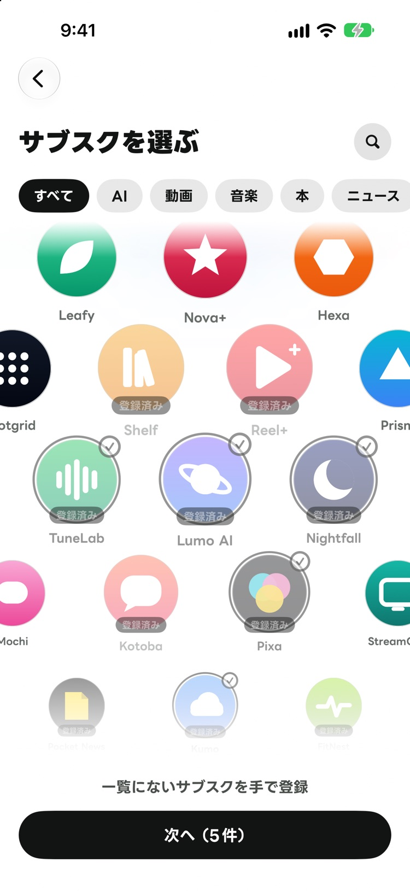
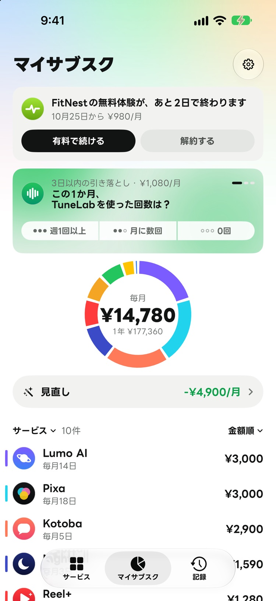
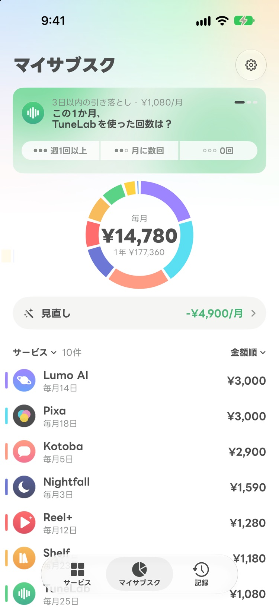
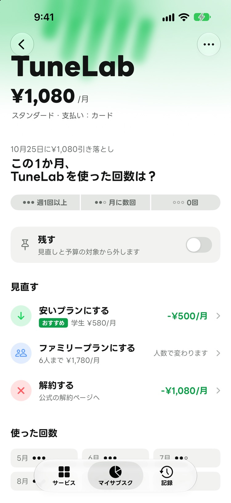
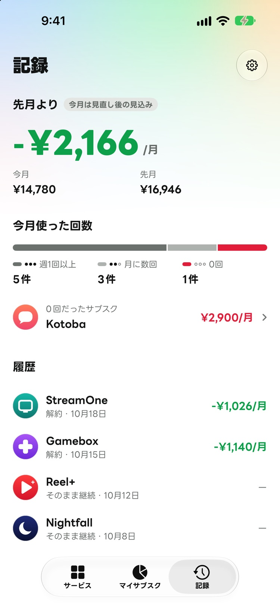
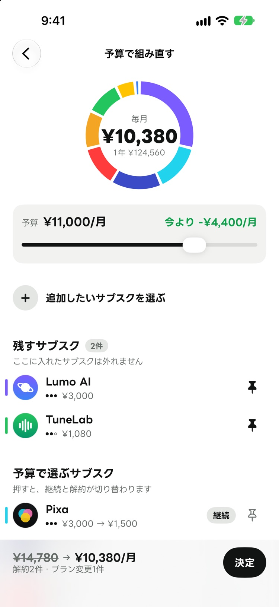
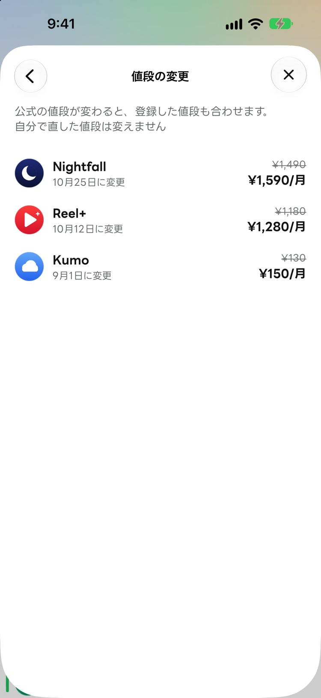
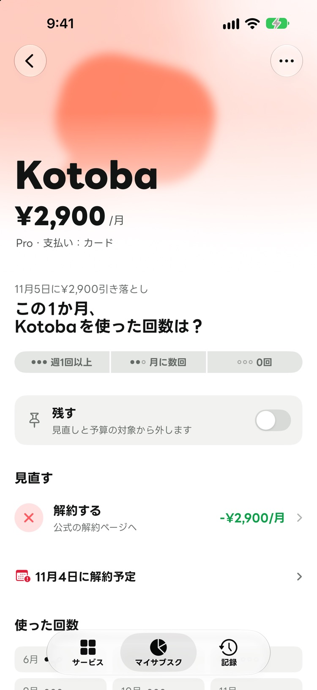

引き落とし前の1問
使った回数からの提案
引き落としが近いサブスクについて「この1か月に使った回数は？」と聞きます。押して答えると、カードがその場で提案に変わります。録画では TuneLab に「0回」と答え、学生プランへの変更を提案されています。
引き落とし前の1問
引き落としが近いサブスクについて「この1か月に使った回数は？」と聞きます。押して答えると、カードがその場で提案に変わります。録画では TuneLab に「0回」と答え、学生プランへの変更を提案されています。
公式の値段つき
サービスごとのプランと値段を、一覧で見渡せます。値段は公式のページで確かめた物です。

入った場所ごと
どの加入経路かを答えると、その解約・変更のページが開きます。

お気に入りは残したまま
毎月の予算をつまみで調整すると、予算内に収まる組み合わせが提案されます。ピン留めしたサブスクは、組み直しても外れません。
約150のサービス
ロゴを押して、プランを選ぶだけで登録が済みます。一覧にないサービスは、手で登録できます。

終わる前に
無料体験が終わる日が近づくと、マイサブスクの一番上にカードが表示され、有料で続けるか解約するかをその場で選べます。

画面はシミュレーターで撮った本物です。金額は見本のデータです。
いくら払っているかを並べた後の、次の一手までを1つのアプリで進めます。

マイサブスクのカードで、使った回数を押して答えます

他のプランや解約が、差額付きで一覧表示されます
加入経路を答えると、解約・変更のページが開きます

先月との差額と、調整の履歴が残ります
買い切りの有料版
¥980買い切り
1回払えば、ずっと使えます。質問・提案・解約のページ・記録は、Plus なしでも使えます。



登録した内容は、お使いの端末に保存します。詳しくはプライバシーポリシーをご覧ください。